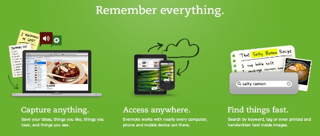
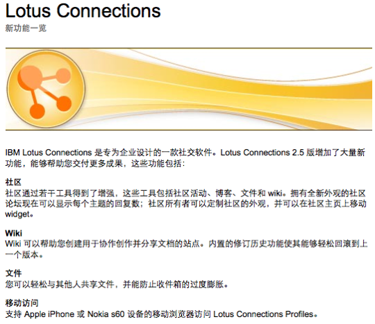
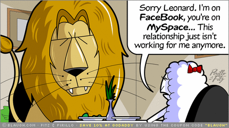

注意这里说的是体验，不是体检。
关于概念
体验设计就是Experience Design，在TW有一个Customer Experience的小组，小组成员遍布世界各地的子公司，这个小组里成天讨论的便是如何在软件进入实质开发前设计出吸引人的新体验，让那个手中攥着钱袋子的人最终决定投入到实际的开发。因为这个小组，我慢慢看到了XD在TW内部的发展过程，并开始了解这个对我来说比较新的概念。
一开始我倾向于把这个当成界面设计行业里又一个名词的诞生（无聊地），为的是博得眼球，创造一个制造横向部门的机会（就像UCD部门）。在UI、UID、UX、UCD、UED等着一串名词概念后，你也不介意再加个XD让买单的人多一个昏的理由。虽然到现在为止，我也认为任何一个被认为缩略成缩写的概念都有市场的需求──这鼓励人传播。
但是对于体验设计而言，当深入了解，我把它当作比以往所有U字打头概念更加包容，更加关注于需求本身的理念，而与实现弱关联，是一种更具备艺术性的设计行为，却又同时具备计算科学的严谨和逻辑。
是什么让我们开始关注体验
为什么我们开始关注体验？没有办法，这个世界无可救药地慢慢变成各种“碎片化”体验的集合，每一种“碎片”背后都是某种具体或者不具体的需求“碎片”。在我们这个时代没有开始以前，需求还没有被碎片化，它往往是独立的且有明确目的的──我永远知道我打开桌面上那个绿色图标的目的是用表格处理跟数字。那么对于需求的设计往往是基于“我知道你要做什么”这样的假设。
当碎片化生活来临时，我们有条件将各种需求“碎片”拼接成一种被期待的，独特的体验，最后又在这种体验中满足一种被裁剪和整合的需求。这些需求开始变得更加宽泛，更加人性，并去除了功能性的属性──从“我要编辑表格”到“我想和其他人一起协作处理数字”。
你能干什么和我能干什么
你是不是慢慢发现，但凡那些让你眼前一亮的各种优秀软件的首页，都用简单动词打头的几句话，搭配易懂的图片，它所表达的潜台词是，“这就是你将得到的体验，简单，但适合”。而不是从功能开始──“我们提供1000项功能，你一定会找到你想要的功能”。
在我们的时代里，Evernote的宣传标语是“Remember Everything”，它表述的就是最简单的体验，直白简单。在这种想去记住一切的体验中，更深一层的解释简单地变为“记下它，然后找到它”。这种体验所带来的亲和力，是前所未有的。

若回到以前那个功能列表写满产品盒子的时代，Evernote就变成：“支持浏览器记录；支持记事本记录；支持划词记录；支持搜索；支持高级搜索；支持分类浏览；支持短信提醒；支持在线提醒；支持邮件提醒”等各种功能的堆砌──“总有一款适合你”。

两者的显著区别是：前者告诉你你（用户）能做什么；后者告诉你我（产品）能做什么。
永不结束的派对
扎克博格建立Facebook的初衷只是为那些社交燥热的大学生创造更多约会机会，它本身的建立基于一种“我要和更多姑娘约会”的体验，而不是“我要建立我的个人空间，和别人来分享我的故事”，这便是MySpace和MSN Space始终无法逾越的根本原因。

当Facebook基于一种原始而朴素的体验，它注定成为一种“谁也不知道会变成什么样的派对”，因为体验会延伸，会像病毒一样变异，“派对”永远不会结束。反之，谁都知道，吃完火鸡就意味着感恩节的聚餐快完了，如果，聚餐的目的是吃火鸡。
可以大胆的假设，基于Remember Everything这种体验的Evernote在某种意义上也可以成为一场不知道变成什么样的派对，好吧，也许记住某些事情的快乐程度可能低于约会姑娘，那至少它也是个不知道变成什么样的活动，就算这样，它也保留了在未来变得有趣的潜力，至少它会是个有生命力的软件。而有生命力的软件意味着，有生命力的盈利模式，哪怕是潜在的。
关于这个系列
写这个系列的目其实很朴实，就是让我们更多的了解体验设计，以及相关的方法论。作为个人，我希望TW China能够有自己的XD团队。这个系列的组织将参考TW已经成型的标准Expeirence Design Offering模式。
当然，如果你对体验设计感兴趣，如果你想加入TW与世界上最好的产品设计者一起工作，你可以和我联系，我们正在尝试建立自己的XD团队。